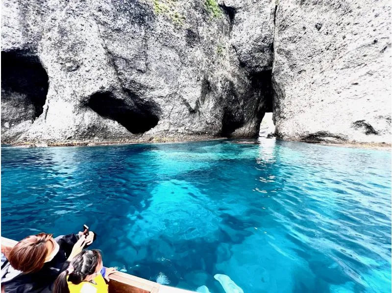
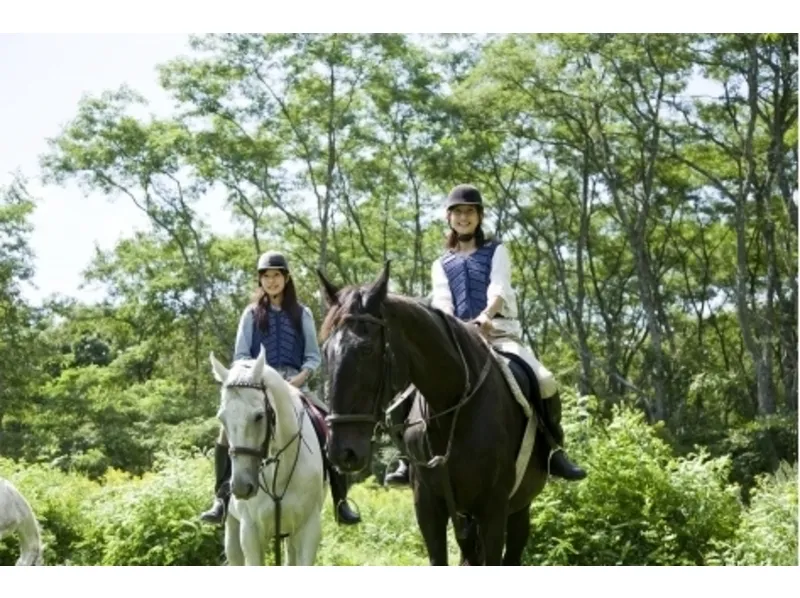
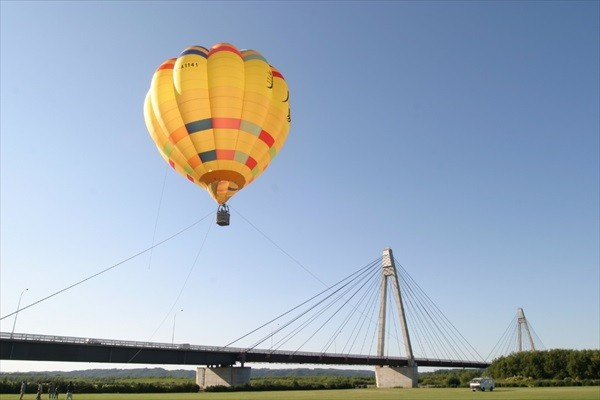
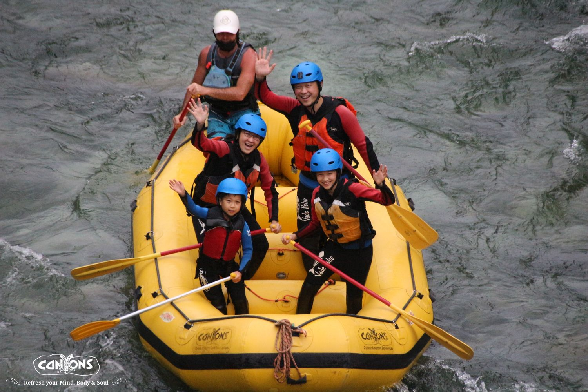
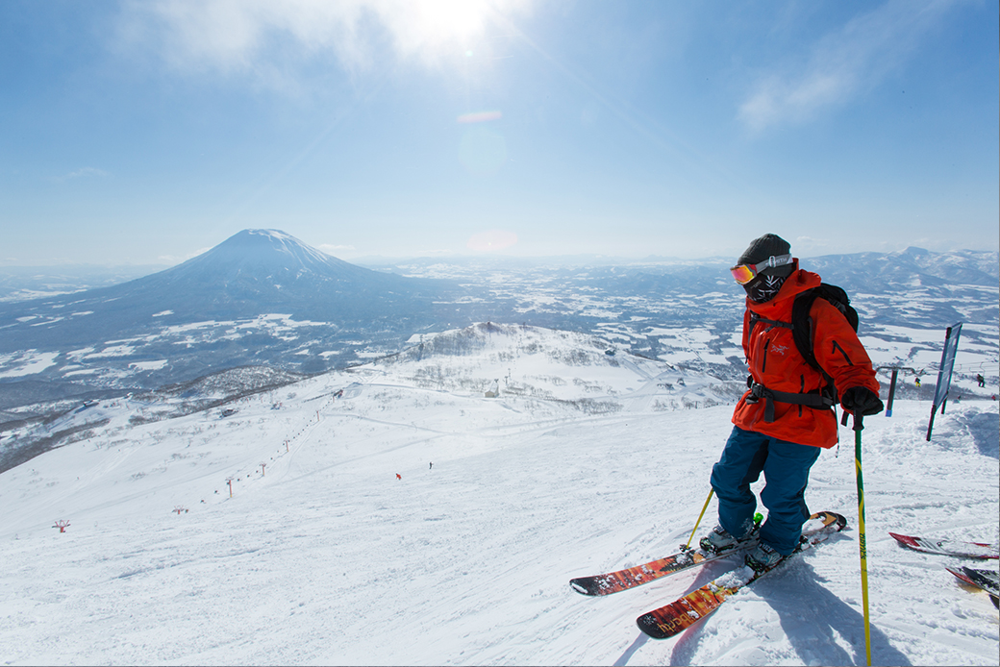
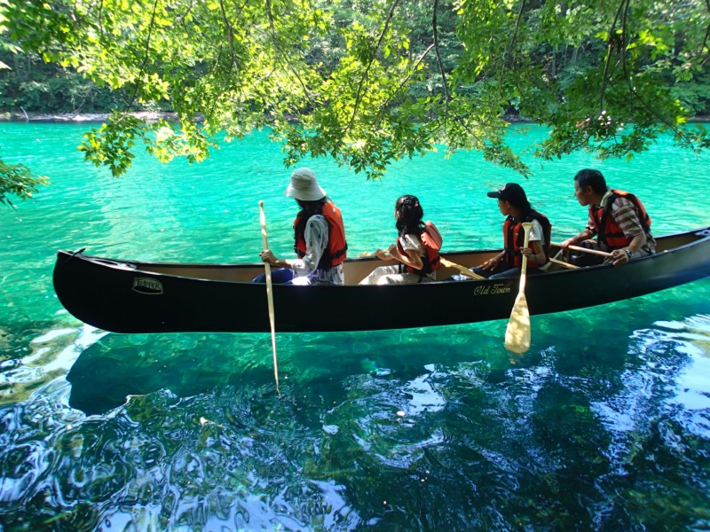
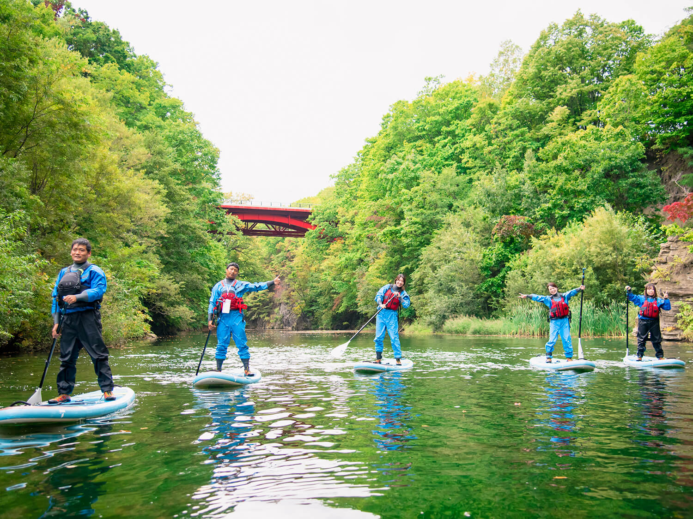

日本で最も早く紅葉が訪れ、山全体が赤や黄色に染まるドラマチックな景色を堪能できます。

神秘的な青い海を間近で眺め、 ボートで駆け抜ける爽快感と 非日常の絶景を体感できます。

馬の背から見渡す目線の高さで 北海道ならではの地平線が広がる大自然と一体になる癒やしの時間を過ごせます。

鳥の目線で富良野や十勝のパッチワークの路を見下ろし、 どこまでも広がる地平線を独り占めできます。
本州のような梅雨や猛暑がなく、カラッとした最高の気候で水辺を満喫できます。

雪解けや大自然の激流を仲間と力を合わせて乗り越え、 水しぶきを浴びながら絶叫する爽快感が格別です。
おすすめエリア：釧路・阿寒湖
川の流れに乗って進む、 スリル満点のアクティビティです。
おすすめエリア：富良野・ニセコ

北海道のふわふわな雪の上で、 スキーやスノーボードを楽しめます。
おすすめエリア：ニセコ・札幌
日本で最も早く紅葉が訪れ、山全体が赤や黄色に染まるドラマチックな景色を堪能できます。

静かな湖をカヌーで進みながら、 北海道の美しい自然を楽しめます。
おすすめエリア：釧路・阿寒湖
川の流れに乗って進む、 スリル満点のアクティビティです。
おすすめエリア：富良野・ニセコ
北海道のふわふわな雪の上で、 スキーやスノーボードを楽しめます。
おすすめエリア：ニセコ・札幌
世界中のスキーヤーが憧れる極上の「パウダースノー」と、厳しい寒さが生む氷のアートが主役です。
静かな湖をカヌーで進みながら、 北海道の美しい自然を楽しめます。
おすすめエリア：釧路・阿寒湖
川の流れに乗って進む、 スリル満点のアクティビティです。
おすすめエリア：富良野・ニセコ

日本屈指の透明度を誇る湖面の上に立ち、 まるで宙に浮いているかのような静かで不思議な感覚を楽しめます。
おすすめエリア：ニセコ・札幌